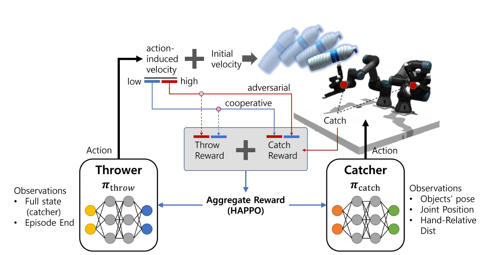
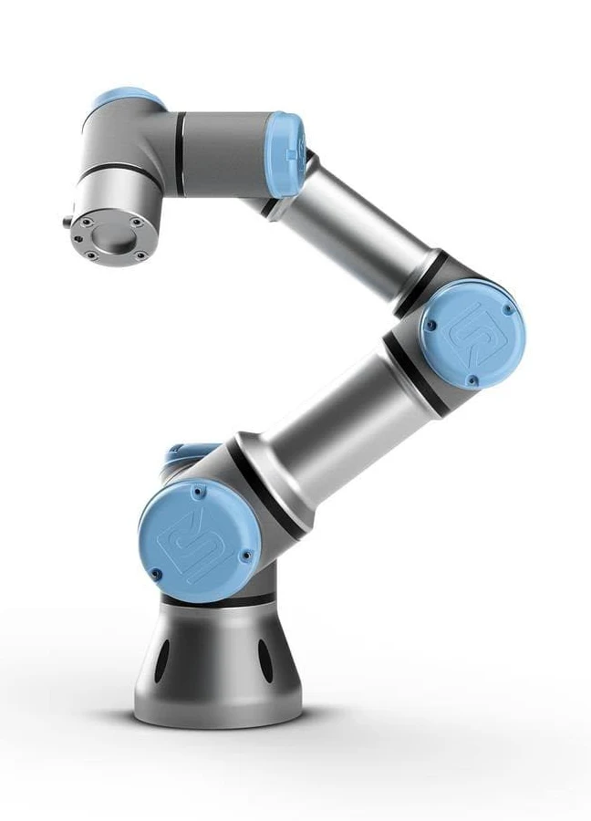
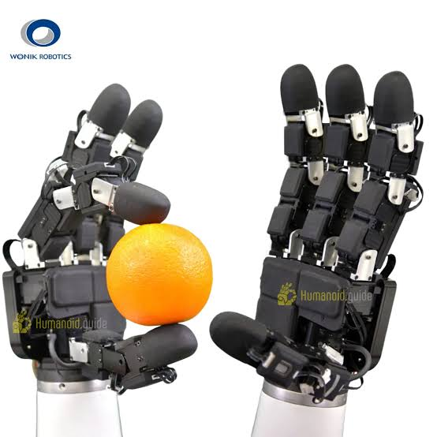
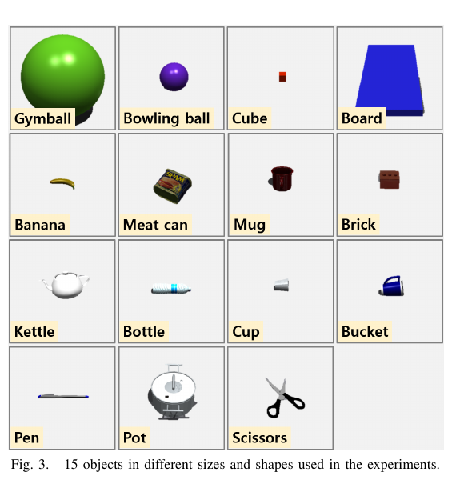
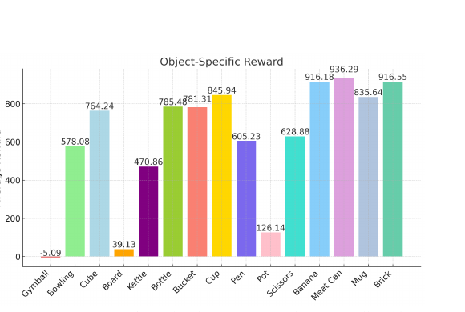
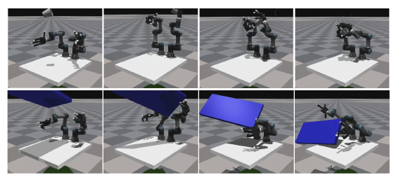

本周围绕“机器人如何抓取高动态物体”展开：先从真实场景的速度、不确定性和尺寸差异出发， 阅读双臂灵巧抓取工作，再把论文中的异构多智能体训练思路映射到自己的感知—抓取系统。
- 核心问题
- 动态物体姿态轨迹预测与实时抓取
- 阅读论文
- Kim et al. · ICRA 2025
- 本周输出
- 奖励分析、实验复盘、系统路线图
BACKGROUND
机器人要如何抓取高动态物体？
动态抓取面对的并不是单一的“快”：物体初速度、旋转、尺寸、遮挡和环境光都会改变可抓取窗口。 真实系统必须在有限观测中完成状态估计、轨迹预测与全身控制。
PROBLEM
问题定义
如何设计一套感知—抓取系统，使机器人在复杂场景下尽可能预测高动态运动物体的姿态轨迹， 并在短时间窗口内完成稳定抓取？
稀疏观测
高速运动与运动模糊压缩了可靠视觉信息。
策略耦合
投掷难度和抓取能力相互影响，奖励责任容易混淆。
对象差异
尺寸、形状和训练频次带来明显的数据不平衡。
PAPER REVIEW
异构智能体如何共同学习
Kim, Taewoo, Youngwoo Yoon, and Jaehong Kim. “Learning dexterous bimanual catch skills through adversarial-cooperative heterogeneous-agent reinforcement learning.”
论文将任务拆成异构的投掷者与接球者：两者在局部目标上具有对抗关系， 又通过聚合奖励共同推动课程难度增长，并采用 Heterogeneous-Agent PPO 进行优化。

REWARD DESIGN
难度匹配决定学习是否继续
rcatch = w₀rhand dist + w₁rgoal + w₂rfinger contact − w₃r̄arm contact − w₄r̄actionrthrow = w₅robject velocity + w₆rthrower actionrtotal = αrcatch + (1 − α)rthrow抓取奖励高，投掷奖励低，缺少新的挑战。
双方奖励均较高，聚合收益推动课程继续。
抓取频繁失败，策略得到的有效信号变差。
投掷者更像会适应学生水平的陪练，而不是只追求让接球者失败的敌手。
EXPERIMENT
实验平台与训练对象



RESULTS
对象差异暴露了数据不平衡


砖块 916.55 · 香蕉 916.18
大板 39.13 · 锅 126.14
大尺寸并不能单独解释失败。多物体训练中的采样不均衡与策略冲突， 更可能是健身球和大板表现显著偏低的主因。
SYSTEM DESIGN
从论文结论回到自己的系统
视觉检测
RGB-D 与事件相机协同预测 6D pose、轨迹和物体尺寸。
控制抓取
重构奖励函数，明确投掷与抓取责任，并融入持续学习。
实机部署
在仿真中闭环验证视觉抓取，最终推进 sim-to-real。
CURRENT PROGRESS
事件感知与仿真环境进展
FUTURE WORK
后续规划
-
控制与姿态估计
完成控制抓取仿真，改善大尺寸物体成功率；系统性优化 6D pose 精度。
-
双相机感知闭环
完成尺寸与轨迹估计，并在仿真中用视觉驱动高动态物体抓取。
-
Sim-to-real 与论文
完成实机迁移，形成两篇论文的基本稿件。